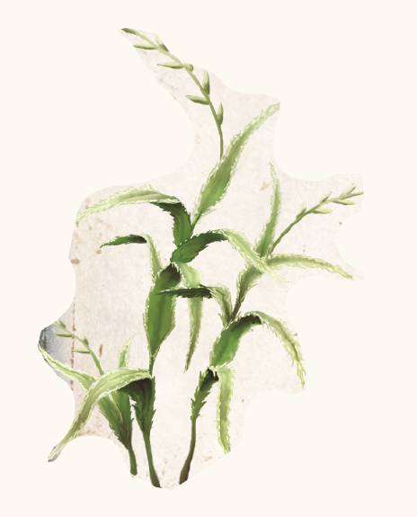

Wirselkraut wächst in ganz Aventurien und kann, außer im Winter, immer geerntet werden. Es ist ein Gras mit fingerbreiten, grünweißen Blättern, deren Rand gesägt ist. In den Grasländern der gemäßigten Zone ist es zwischen all den anderen Gräsern nicht leicht zu identifizieren. In der Tundra hingegen gehört es zu den höchstgewachsenen Pflanzen und ist gut zu erkennen. Jeder kennt Wirselkraut. Abenteurer, Handwerker und Bauern nutzen es gleichermaßen, um die Blessuren, die ihre Arbeit mit sich bringt, zu behandeln. Kräuterhändler, Alchimisten und Heiler schätzen es als Grundlage zahlloser Heilsalben und Tränke, vor allem, weil Nebenwirkungen bei einer übermäßigen Anwendung nicht bekannt sind. Einzig Zwerge mögen es überhaupt nicht, denn bei ihnen entfaltet Wirselkraut nur verminderte Heilwirkung und erzeugt, bei innerlicher Anwendung, zudem Übelkeit.
Wirselkraut ist denkbar einfach anzuwenden. Frisch gepflückt und unbehandelt auf eine Wunde gelegt, stoppt es die Blutung und unterstützt zudem die Regeneration. Es kann auch eingenommen werden, ist dann aber nicht im selben Maß heilkräftig. Bei Kämpfern und Abenteurern sehr beliebt sind Verbände, die vorab mit Heilsalbe aus Wirselkraut bestrichen wurden und bei frischen Wunden umgehend die Blutung stoppen. Für die Heilsalbe müssen drei Wirselkräuter zerrieben und mit Salbenfett vermengt werden. Eine wichtige Zutat des Heiltranks ist der Wirseltrank, ein schlichter Absud aus vier Blättern, die kleingerupft und mit heißem Wasser übergossen werden. Nachdem er sieben Stunden gezogen hat, wird der Wirseltrank abgeseiht, auf Flaschen gezogen und entfaltet eine beachtliche Heilwirkung.
Verbreitung:
Landschaftstyp: alle
Regionen: alle außer Ewiges Eis und Wüste
Suchschwierigkeit: -1
Bestimmungsschwierigkeit: -2
Anwendungen: 3/3/3/4/4/5
Wirkung:
Roh:
Berührung: Blätter zerstoßen aufgetragen: pro Anwendung 1 LeP zusätzlich bei der nächsten Regeneration, maximal jedoch 3 LeP pro Regenerationsphase zusätzlich.
Einatmung: keine
Verzehr: Pro Anwendung 1 LeP zusätzlich bei der nächsten Regeneration, maximal jedoch 3 LeP pro Regenerationsphase zusätzlich.
Verarbeitet: siehe Rezepte
Preis: 2 / 2,2 Silbertaler
Rezepte:
Pflanzliche Hilfsmittel: Brandsalbe, Wirseltrank
Elixiere: Heilsalbe, Heiltrank
Volksbrauchtum:
Wirselkraut gilt in großen Teilen Aventuriens als Inbegriff und Sinnbild der Heilung.
Wo es welkt, sei Mishkara am Werk, sodass am Wuchs der genügsamen Wirsel die Gesundheit ganzer Landstriche kontrolliert wird.
Für unbehagliche Orte hat sich so der Spruch „Da bleibt die Wirsel fern“ etabliert.
So überrascht es auch nicht, dass Wirselheim neben Alrikfurt der häufigste Dorfname Aventuriens ist.
Tieren bindet man häufig Kränze oder Zöpfe aus Wirsel an, um Krankheiten fernzuhalten und damit sie sich selbstständig versorgen können, falls sie sich verletzen.
Haltbarkeit:
Roh: siehe Haltbarmachung